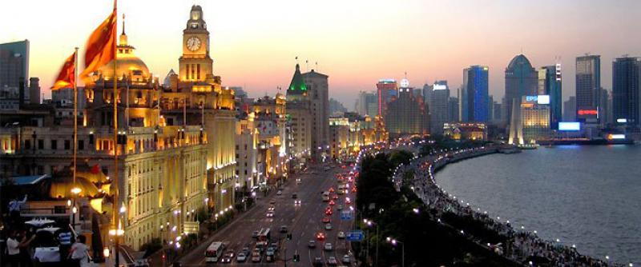

Interactive Shanghai Travel Guide



The Bund - Modern View
This page introduces visitors to the rich history and cultural background of Shanghai. By exploring the origins, historical events, cultural heritage, and notable figures of the city, readers will experience how Shanghai transformed from a small fishing village into a global metropolis.